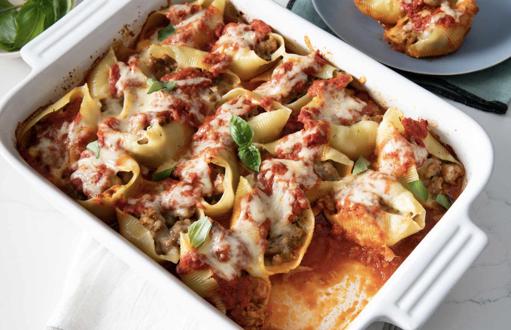

Home
Delicious Stuffed Shells
Below is the best recipe for easy and delicious stuffed shells.
Depending on how much stuffing you put into each shell, you might need more or less of the cream cheese mixture
Ingredients
- 1 box of jumbo shells
- 1 lb of ground beef
- 1 jar of spaghetti or marinara sauce
- 1 block of cream cheese
- 1 cup of shredded mozzarella cheese
- Optional: can add any other cheese to your preference
- Basil to taste
- Salt, Pepper, Italian seasoning to taste
Instructions
- Preheat oven to 400
- Start by boiling a pot of water, can add salt if preferred
- In a separate pan brown ground beef - add seasonings to taste
- In a bowl mix cream cheese, shredded cheeses, Italian seasoning, and basil
- Boil jumbo shells according to instructions
- Strain ground beef to remove excess grease
- Add jar of sauce to ground beef and set pan to low
- Drain the shells
- Add cream cheese stuffing to shells
- Add meaty sauce to the bottom of a baking dish
- Add stuffed shells to the dish, cover shells in sauce, and repeat layering stuffed shells until the baking dish is full - can add shredded cheese throughout the layering
- Bake for 15 minutes, or until any cheese is visibly melted
Home
Pairs well with Easy Garlic Bread
Delicious recipe have you hungry for dessert? Try this Tasty Blueberry Crumble